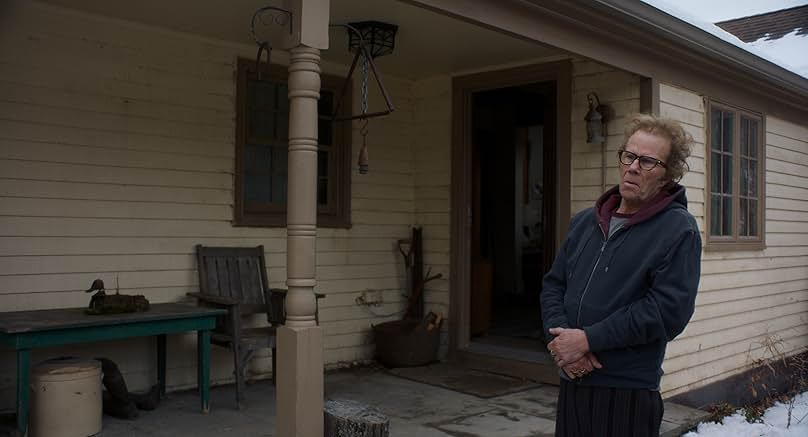

Father Mother Sister Brother
Father Mother Sister Brother · Film · 2025

This movie offers insight into the complicated dynamics between parents and siblings. Father reveals himself as rather cool, without a running car, and is manipulative by sharing economic matters only with his son Jeff. Jeff shows his empathy by bringing a box full of useful groceries and food, even putting thought into the special marinara sauce that already has the cheese incorporated. Father exploits his son's empathy in economic issues, even giving a fake dignified refusal of money. Emily seems more analytical and questions childhood memories of their father, needing to make sense of his strange behavior. Emily and Father both know Jeff's emotions, and it is difficult for him to speak openly about his divorce.
Few directors have the magical ability to bring characters together over a cup of coffee and a cup of tea. We have seen this magic in Jarmusch's previous work such as Coffee and Cigarettes. My favorite scene is the one where Mother brings the tea with beautiful china, together with scones, sandwiches, cakes, and pastries. Cate Blanchett's portrayal of an anxious character is flawless as she looks at herself in the mirror to assess whether her smile is good enough for this meeting with her mother. Lilith probably knows that she does not meet her mother's standards and continuously lies about her partner, the Uber, and the Lexus. Probably a strict mother, the daughters are curious about their mother's intellectual work, yet that work does not seem to belong to the emotional language of this family.
The episode between Sister and Brother leaves us with the theme of loss, grieving over the death of a parent in an accident. Skye still deals with sadness, and her brother, who uses substances, becomes a strong vessel of remembrance from childhood. Their shared past returns through drawings from childhood and an ID full of mystery from California. How about some siblings where you have an intense connection because he or she is your twin? How would your memories of your parents change if you were deeply connected in that way?
The house where I grew up is filled with old books, notebooks, and memories from the past. I felt really connected when Skye asks what they are going to do with the storage full of stuff, because sometimes you simply cannot deal with those objects that force you to remember. All these stories deal with some type of mystery inherited from parents: emotional ambiguity, silences, documents, memories, and unresolved versions of the past.
This movie is sweet in a peculiar way. It shows that differences in age, affection, need, and distance make our relationships with our parents very unique. You are a child only once, and emotional patterns, secrets, fears, and trauma are formed with our parents. Adulthood and separation create that strange dynamic in which you were once vulnerable and later find yourself living with regrets, problems, unresolved tensions, and the question of whether your memories still mean what they once meant when you were a child. The film ties the three stories together with recurring details such as the Rolex watches and the British expression Bob's your uncle. In the end, the movie made me reflect and, in an unexpected way, feel at ease with the family dynamics of other people.